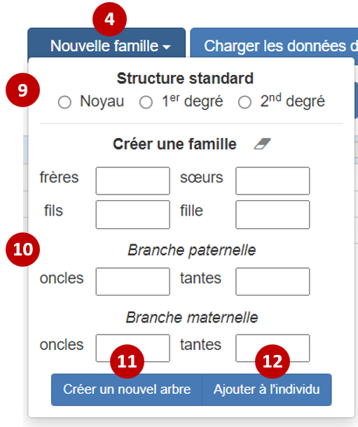

Introduction
Cette application est un outil intégré pour aider les médecins dans le cadre de leur consultation de génétique, notamment francophones (disponible en anglais également).
Il dispose d'un mode spécifique pour la consultation d'oncogénétique ainsi qu'un utilisant les phénotypes HPO.
La famille peut être chargée (fichiers JSON ou BOADICEA) ou créée à partir d'une structure standard ou personnalisée, puis complétée via un tableau ou une interface graphique, tout deux interconnectés.
L'arbre est exportable dans plusieurs format de fichiers (TSV, JSON, PED, BOADICEA) et modifiable par un éditeur vectoriel (format PDF, SVG).
Enfin, cette application permet la génération automatique de texte basée sur le contenu du tableau.
Initialement, cet outil a été conçu particulièrement en pensant aux consultations d'oncogénétique afin d'éviter la triple saisie (texte-arbre- score de risque boadicea). L'application est articulée autour de trois volets : le tableur, l'arbre, le texte. Des boutons (en rouge) permettent de synchroniser manuellement les données entre ces trois volets.

Figure 1. Fonctionnement général de l'application
Tableau de saisie
Chargement d'un fichier
Un fichier Boadicea v4 ou JSON (issu de l'arbre ou du tableur) peut être chargé directement (1).
Création d'une famille
Un arbre de base est proposé : le cas index et ses parents, les grands-parents, et enfin les arrières-grands-parents (2).
Il est aussi possible de générer un arbre personnalisé (3) avec le nombre de membres adéquats (frères, soeurs, oncles et tantes de chaque branches) via le bouton 'Créer un nouvel arbre' (4). Note : il est également possible de sélectionner un individu et d'ajouter via ce menu des membres ('Ajouter à l'individu')(5).

Figure 2. Menu déroulant du tableau
Ajout d'un individu
Une fois un individu sélectionné, il est possible de cliquer sur les boutons afin d'ajouter un membre correspondant. Note : le bouton conjoint permets d'ajouter un nouveau conjoint à l'individu. Il est ensuite possible de personaliser cet individu : genre, décès, âge, année de naissance, pathologie avec âge de début etc. Un champs "commentaire" est également existant et son contenu sera ajouté dans le texte généré.
Autres fonctions
- Réinitialiser : efface l'arbre est créer un arbre de base propositus et parents.
- Défaire : défait la dernière action
- Refaire : refait la dernière action
- Mode "onco" : pré-rempli la liste des pathologies avec des cancers et affiche les colonnes présentes dans Boadicéa.
- Mode "HPO" : importe la liste des pathologies et symptômes HPO lors du choix des pathologies.
Prise en main de l'arbre généalogique
L'arbre est chargeable à partir d'un fichier pedigreeJS, depuis le tableur ou d'un fichier BOADICEA v4. Il est possible de mettre l'arbre en plein écran, de défaire ou refaire la dernière action et également de centrer l'arbre.
Une fois que vous avez commencé à construire votre arbre généalogique, placez le pointeur de la souris sur un individu, pour faire apparaître les "widgets" utilisés pour l'édition. Vous pouvez utiliser ces "widgets" pour ajouter des partenaires, des parents, des frères et sœurs, des enfants à votre arbre. La roulette permets, elle, d'ouvrir un menu afin de modifier l'individu : âge, sexe, pathologies, etc.
Les pathologies sont paramétrables grâce à la roulette à droite. Chaque pathologie corresponds à une couleur (en HEX ou en toute lettre) ou à un motif. Un bouton spécifique permets de transformer les couleurs en motifs.

Figure 3. "Widgets" autour d'un individu
L'arbre est ensuite téléchargeable dans différent fichier : "JSON" pour la sauvegarde de toutes les informations, Boadicea afin d'utiliser Canrisk
, "SVG" afin de permettre de le modifier avec un logiciel vectoriel et enfin "JPEG". L'impression directe ou l'export en format PDF est également possible via un bouton dédié.
Avant de l'exporter, il est utile d'utiliser le bouton "centrer l'arbre" afin de centrer l'arbre et le mettre à l'échelle du cadre.
Note : l'abre est sauvegardé en cache local ce qui empêche la perte de donnée en cas de raffraichissement accidentel. Par ailleurs, aucune donnée n'est envoyée au serveur.
Génération du texte
Le texte est généré à partir du tableau (et non de l'arbre) grâce au bouton dédié. Le texte est ensuite modifiable, sélectionable et copiable.
Références
CanRisk Tool—A Web Interface for the Prediction of Breast and Ovarian Cancer Risk and the Likelihood of Carrying Genetic Pathogenic Variants. Carver, T. et al. Cancer Epidemiol Biomarkers Prev (2020). doi:10.1093/bioinformatics/btx705
BOADICEA: a comprehensive breast cancer risk prediction model incorporating genetic and nongenetic risk factors. Lee, A. et al. Genet Med 21, 1708–1718 (2019). doi:10.1093/bioinformatics/btx705
pedigreejs: a web-based graphical pedigree editor
Carver T, Cunningham AP, Babb de Villiers C, Lee A, Hartley S, Tischkowitz M, et al.
Bioinformatics
doi:10.1093/bioinformatics/btx705
HPO-translations
drseb/HPO-translations
The Human Phenotype Ontology (HPO)
Annotations
Copyright : Jean-Marie Ravel, 2020
Contact : jmravel.dev@gmail.com